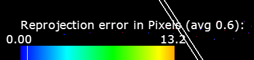

Table of Contents
Description
The NVIDIA® DriveWorks Graph Calibration Tool optimizes the intrinsics parameters and extrinsics pose of a named set of (rigidly mounted vehicle) cameras by constructing and optimizing a calibration graph. As input it requires image and/or video recordings of a calibration scene. Please consult the Static Camera Calibration Tutorial tutorial for detailed calibration scene setup instructions, best practices on calibration recording, and insights on calibration output/result interpretation.
Prerequisites
This tool is available on the x86 Host System.
Running the Tool
Run the tool by executing:
/calibration-graph-cli --targetDB=[path to target database]
--dir=[path to directory containing calibration images]
--data=[path to a calibration data description json]
--rig=[path to a rig file]
--fixIntrinsics=[camera name]
--fixExtrinsicsRotation=[camera name]
--fixExtrinsicsTranslation=[camera name]
--graph=[path to a calibration graph json]
--outputDir=[path to directory]
--precise-validation-images=[0,1]
--cpu-apriltags=[0,1]
--logLevel=[0,1,2,3]
Parameters
--targetDB=[path to target database]
Description: The target database to use. Automatically assigned `targets.json` when loading from `dir` structure.
Ignored when the [graph] parameter is supplied.
--dir=[path to directory containing calibration images]
Description: Path to a directory with known structure to load calibration images from (see next section).
Any `calib-data`, `graph`, and `calibrated-graph` files in the directory will be overwritten.
Ignored when the [data] or [graph] parameters are supplied.
--data=[path to a calibration data description json]
Description: Path to a calibration data description json.
Any graph and calibrated-graph json files in the directory will be overwritten.
Ignored when the [graph] parameter is supplied.
--rig=[path to a rig file]
Description: Path to a rig file.
If provided, camera intrinsics and extrinsics are initialized from the rig file instead of default
initialized. If a camera is not listed in the provided rig file, it is default initialized instead.
Ignored when the [graph] parameter is supplied.
--graph=[path to a calibration graph json]
Description: Path to a calibration graph json. Can be used to reload a previously calibrated graph and produce
validation images.
--outputDir=[path to directory]
Description: Path to an existing directory to which output files are written to.
--cpu-apriltags=[0,1]
Description: Determines the method used for AprilTag calibration target detection.
When set to `1`, the CPU AprilTag detector is used. When set to `0` the GPU detector is used.
Defaults to `1`.
--fixIntrinsics=[camera name]
Description: Camera name for which the intrinsics model parameters won't be optimized.
Camera name is matched to names in the [rig] file and to the names in the input file structure. Substring matching is supported.
For instance: supplying `front` would fix the intrinsics of both `camera:front:wide:120fov` and
`camera:front:tele:30fov'.
Providing multiple camera names is not supported.
Ignored when the [graph] parameter is supplied.
--fixExtrinsicsRotation=[camera name]
Description: Camera name for which the rotation component of the extrinsics won't be optimized.
Camera name is matched to names in the [rig] file. Substring matching is supported.
Providing multiple camera names is not supported.
The [rig] parameter needs to be supplied in conjunction with this argument.
Ignored when the [graph] parameter is supplied.
--fixExtrinsicsTranslation=[camera name]
Description: Camera name for which the translation component of the extrinsics won't be optimized.
Camera name is matched to names in the [rig] file. Substring matching is supported.
Providing multiple camera names is not supported.
The [rig] parameter needs to be supplied in conjunction with this argument.
Ignored when the [graph] parameter is supplied.
--precise-validation-images=[0,1]
Description: When set to `1`, validation images are generated in .png format with fine validation overlays.
When set to `0`, validation images are generated in .jpg format with bolder validation overlays.
Defaults to `0`.
--intrinsics-validation-images=[0,1]
Description: When set to `1`, validation images are generated for each intrinsics constraints image.
The intrinsics .json files need to contain the paths to the images from which the constraints have been created.
Also, an average background image is rendered with the overall intrinsics-validation images.
Defaults to `0`.
--logLevel=[0,1,2,3]
Description: Determines the log output verbosity. Valid levels are `0`: verbose and above; `1`: debug and above;
`2`: warning and above; `3`: error. Level `1` is set by default.
--max-solver-iterations=[integer number > 0]
Description: Defines the maximum number of iterations the solver is allowed to perform during optimization.
For Good results, this should be a big number, such the solver can reach convergence.
However, the bigger this number, the longer it takes until the solver aborts in case of non-convergence.
Defaults to `20000`.
--ftheta-reference-poly=[0,1]
Description: Selects whether the backward (0) or forward (1) polynomial is used as reference in the FTheta camera model.
Defaults to `0`.
--ftheta-poly-degree=[auto,4,5]
Description: Selects the polynomial degree of the reference polynomial for each FTheta camera model:
- `auto`: ideal polynomial degree is automatically selected based on per-camera properties
- `4`: unconditionally use 4th-order polynomials for all FTheta cameras
- `5`: unconditionally use 5th-order polynomials for all FTheta cameras
--ftheta-linear=[none,scale]
Description: Selects which linear transformation components of the FTheta camera model to optimize:
`none`: stick to identity linear term; `scale`: optimize the relative pixel scale ratio term.
Defaults to `none`
Calibration Input Options
Directory
When using this tool with the --dir option, the following folder and file structure is expected to be present. The extrinsics and intrinsics folders need to contain the extrinsic and intrinsic images and/or videos of the named (vehicle) cameras to be calibrated. The external folder needs to contain additional images taken by an external (with respect to the calibrated vehicle) camera. These images are used to constrain the calibration scene. targets.json and special-targets.json files need to be available and contain values compatible with the to be calibrated scene targets.
Target Database <tt>targets.json</tt>
targets.json is a target database file that is shipped with DriveWorks. It can be found together with the AprilTag targets under
data/tools/calibration/aprilTargets/targets.json
The target database contains a description of all AprilTag targets that can be used for extrinsic calibration. The bar length for each target in the scene must be measured, as described in 1.2.3 Target Print Validation. It is important that these measurements are precise. The corresponding barLength entries in the targets.json must be updated with the measured values. This communicates the scale of the targets to the calibration tool.
Special Targets
The tool employs planar AprilTag targets for both intrinsic and extrinsic calibration. The ID, layout, and metric size of these targets needs to be specified in the file targets.json. Some targets are considered "special". For example, targets attached to wheels, or targets laying flat on the floor that constrain the ground plane. These special targets must be declared in a separate special-targets.json file, with a structure similar to the following example:
Extra Constraints
Incorporating prior knowledge of certain pose parameters / relations can be beneficial to improve the quality of the estimation. One example is the baseline of stereo camera pairs, which is usually known accurately from sensor specifications, but which is challenging to estimate accurately as part of static calibration.
To incorporate such prior knowledge into the estimation, special types of extra constraints can be specified within the extra-constraints.json file. An example is give by
Here, extrinsic-constraints is an array of constraints on the estimated extrinsic pose parameters. Each constraint can be enabled within the estimation (using enableInEstimation) and / or enabled in the result validation (using enableInValidation).
The following types of extra extrinsic constraints are currently supported:
relative-distance: defines a constraint on the relative distance (also called baseline) between two cameras (sensorNameAandsensorNameB), enforcing a known prior valuerelativeDistanceValueMeter(in meters) with a known standard deviationrelativeDistanceStdDevMeter. For validation, an error is issues if the estimated relative distance between the cameras exceedrelativeDistanceMaxDeviationMeter(in meters).position: defines a constraint on the final position of a sensor (sensorName) relative to the rig frame, enforcing a known prior valuepositionValueMeter(in meters) with a known standard deviationpositionStdDevMeterfor each position coordinate. For validation, an error is issues if the estimated position of the camera exceedspositionMaxDeviationMeter(in meters). As an example for the different parameter specification options, in the example specification shown above a stronger position variance for the height / z coordinate of the sensor was specified to account for additional variances, e.g., induced by potentially different vehicle suspension states (which will affect the sensor's height relative to the ground), between the provided prior values and the actual current vehicle state.
Intrinsics Constraints
There are two options to obtain the .json files with the intrinsics constraints for each camera:
Intrinsics Constraints Tool
Use the Intrinsics Constraints Tool to extract the intrinsics constraints from a recorded video or a set of images. The tool then generates a JSON file with the camera constraints.
Calibration Recorder Tool
Use the Static Calibration Recorder Tool to extract the intrinsics constraints from camera sensors that are defined in a rig .json file. This can be used to capture the constraints from a live camera stream or from recorded video.
- Note
- This is the recommended way of getting the intrinsics constraints. The tool provides visual feedback while recording the constraints, which facilitates good coverage and distribution of constraints over the camera's field of view.
- If the camera contains a camera model in its EEPROM, the Static Calibration Recorder Tool can read and store the model to the .json file when capturing the Extrinsic Images. In that case it is not necessary to capture intrinsics constraints.
Extrinsic Images
The Static Calibration Recorder Tool can be used to obtain the images for extrinsics calibration. It provides live AprilTag detection and a camera overview while to setting up the calibration scene, and it exports the images for the extrinsics directory.
External Images
These are images taken with an external photo camera. Refer to 1.1.2 External Camera for the required camera properties and 3.2.2 External Images for more details on how these photos should be taken.
Building and Calibrating the Graph
Running the tool without arguments assumes the known file structure above. It will determine the names of the cameras from the extrinsics folder. Then it will look in the intrinsics folder for corresponding json files containing the respective cameras' intrinsic constraints. External images will be used to constrain the calibration graph via additional extrinsics constraints. If no external.json file with intrinsics of the external camera is provided, the external images are also used to calibrate the intrinsics of the external camera. However, this is not recommended due to worse intrinsics quality.
./calibration-graph-cli
Calibration Data JSON
The calibration data can be explicitly specified in a json file. This file collects all intrinsics constraints as well as extrinsics and external data in a single location for convenience. The format of this json file is best understood by example. ./calibration-graph-cli generates this file as an intermediate step. Subsequent runs can be started from this representation directly. See /sdk/data/tests/tools/calibration-calibgraph/gt-scenes/quicksilver/SceneQuicksilver-v2/calib-data.json for an example with 12 cameras.
./calibration-graph-cli --data=calib-data.json
A Calibrated Graph
One of the outputs of the tool is a calibrated-graph.json file. This file includes all constraints (intrinsic and extrinsic) used for calibration. Running the tool with
./calibration-graph-cli --graph=calibrated-graph.json
will load the constraints from the graph, initialize the graph with the values in the file, re-run the non-linear optimization, and rewrite all the outputs.
Fixed Intrinsics
The intrinsics .json files can contain a camera model, as the Static Calibration Recorder Tool can store it either by reading from the camera's EEPROM, or it can directly calibrate with collected intrinsics itself. Alternatively, camera intrinsics can be parsed directly from an existing rig (provided with the --rig parameter). Intrinsics provided this way can be used with the --fixIntrinsics parameter, see Parameters for usage details.
Intrinsics are also fixed, if an intrinsics .json file contains only a camera model, but no constraints. This is the case when reading from the camera's EEPROM and not recording any constraints additionally. In that case the stored camera model will be used for extrinsic calibration and will end up in the result.
Intrinsics Validation
If
- the
--fixIntrinsicsparameter is used, - and there are also intrinsics constraints present in the intrinsics .json file of a fixed camera,
then there will still be an optimization performed that tries to match the constraints to that camera model. This optimization does not affect the calibration result. The model and the constraints match well if the reprojection errors are small (see Outputs). This can be used to validate an existing camera model.
Option 1 (Existing intrinsics from rig):
- Capture constraints for a camera
- Provide a rig file with existing intrinsics and use
--fixIntrinsicsfor that camera - Run
./calibration-graph-cli --dir=<calibration data> --rig=<rig file> --fixIntrinsics=<camera name> - Check the
validation-intrinsics-<camera name>.jpgfile
Option 2 (Existing intrinsics from EEPROM):
- Run Static Calibration Recorder Tool
- Capture constraints and save them without overwriting the existing camera model
- Run
./calibration-graph-cli --dir=<calibration data> --fixIntrinsics=<camera name> - Check the
validation-intrinsics-<camera name>.jpgfile
Outputs
- The tool outputs progress to the console. Note the warnings in yellow and errors in red. They indicate possible problems with the calibration.
- The main output of the tool is the
calibrated-graph.jsonfile. This file contains the full calibration result in.jsonformat, including all constraints, the calibrated camera models, the camera poses, and the target poses. Its format cannot be consumed by the DriveWorks SDK directly. The results can be converted with Calibrated Graph to Rig File Tool into a validrig.jsonfile. This rig file represents the entire calibrated camera rig configuration and can be consumed by DriveWorks’ dwRig module.
- Intrinsic validation images (
validation-intrinsics-<camera>.jpg) support the validation of a camera's intrinsic calibration. A horizontal and vertical line going through the camera's principal point visualize the calibrated angular field of view (AFoV) throughout the lens at different radii. The white concentric circles centered at the principal point indicate the calibrated AFoV at each side of the image. The white tilted cross shows the center of the image as a reference, to visualize the offset of the calibrated principal point. Blue and red points, correspond to the detected and optimized/reprojected calibration target corner points used for intrinsic calibration. Lines join corresponding detections and reprojections. Individual long lines represent outliers. Frequent long lines throughout the validation image may indicate a problem with the intrinsic calibration.
To illustrate:
- Blue Dots = Detected.
- Red Dots = Reprojected.
- Short Lines (Colored blue to green) = Line joining detection and re-projection.
- Long Lines (Colored green to orange) = Outliers are contributing less.
- White axes indicating AFOV crossing at principal point
- White circles representing AFoV at images sides (horizontal and vertical FoVs)
There is a color legend at the bottom left that indicates the reprojection error corresponding to the line colors. It indicates the mean and range of re-projection errors. A mean re-projection error below 1pxl (ideally below 0.5pxl) with few outliers is required for adequate calibration accuracy 
The intrinsics validation output is generated for all car cameras (validation-intrinsics-<camera>.jpg) and the external camera.

- Extrinsic validation images show the image used for extrinsic calibration with overlaid results, where:
- Detected AprilTag targets have a green overlay.
- Detected tags have their corner detections with the same colors as their intrinsic re-projections.
- The ground plane is drawn as a series of green lines 1 meter apart. The lines at
x = 0andy = 0are orange.
The extrinsics validation output is generated for all car cameras and each external image (validation-<camera>.jpg).
- Extrinsic validation images (
validation-<camera>.jpg) support the validation of a camera's extrinsic calibration, see 4.3.3 Extrinsic Calibration Validation. Reprojections of detected calibration targets are overlaid in light green. Blue and red points, respectively, correspond to the detected and optimized/reprojected calibration target corner points used for extrinsic calibration. The ground plane is drawn as a series of green lines 1m apart (lines at x=0 and y=0 are drawn in orange). Overlays should match the calibration patterns closely (at most a few pixels off). There are 2 graphviz files written to the output directory, 'graph.dot' and 'graphCollapsedExternals.dot'. 'graph.dot' represents the graph that's being optimized in extrinsic calibration, all nodes representing things to be optimized, edges representing constraints. 'graphCollapsedExternals.dot' is a simplified version that represents external images as edges rather than nodes, this makes it easier to visually understand the relations. The '.dot' files can be converted into '.png' images by running the graphviz tool
neato -Tpng graph.dot > graph.png